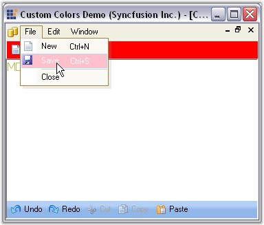

Essential studio comes with three classes to provide custom colors for the Menus.
· MenuColors - The Syncfusion.Windows.Forms.Tools.XPMenus.MenuColors class is used when the Visual Styles is Default.
· Office2003Colors - The Syncfusion.Windows.Forms.Office2003Colors class is used when the Visual Styles is set as Office2003.
· Office2007Colors - The Syncfusion.Windows.Forms.Office2007Colors class is used when the Visual Styles is set as Office2007.
The Syncfusion.Windows.Forms.Tools.XPMenus.MenuColors class includes static properties that allow you to change them to get custom background colors for the different portions of the menus and toolbars. Some of the properties include MainMenuBackColor, CommandBarBackColor and StatusBarBackColor.
The following methods of MenuColors class can be invoked to set the custom color.
|
MenuColors |
Description |
|
CommandBarBackColor |
Gets / sets the background color for a toolbar / commandbar. |
|
CheckedSelColor |
Sets the selected color for a checked menu item. |
|
DisabledMenuTextColorBase |
Gets / sets the text color base for the text in the disabled menu items. |
|
DisabledToolbarItemTextColorBase |
Gets / sets the text color base for the text in the disabled toolbar items. |
|
DropDownBorderColor |
Gets / sets the border color for a drop-down menu. |
|
ExpandedMenuStripBackColor |
Gets / sets the Backcolor for the expanded, left-aligned menu strip region. This is the region you see when a partial menu gets expanded to show all the menu items. |
|
FloatingCommandBarCaptionColor |
Gets / sets the Caption background color for a floating toolbar / commandbar. |
|
InactiveItemAlphaBlendFactor |
Gets / sets the alpha-blend factor to use to shade the inactive menu item's icons. (255 for no alpha-blending; 0 will completely hide the item). |
|
MainMenuBackColor |
Gets / sets the background color for the main-menu bar. |
|
MenuActiveTextColor |
Gets / sets the active text color of the menu and toolbar items. |
|
MenuBGColor |
Sets the background color for a drop down menu. |
|
MenuLeftStripColor |
Gets / sets the color for the left aligned strip in a drop-down menu where images and check boxes are shown. |
|
MenuTextColor |
Gets / sets the text color of the menu and toolbar items. |
|
PressedSelColor |
Gets / sets the selected-pressed color for a menu item in a toolbar. |
|
SelBorderColor |
Gets / sets the border color for a selected menu item in a toolbar. |
|
SelColor |
Gets / sets the selected color for a menu item in a toolbar. |
|
SelTextColor |
Gets / sets the selected text color for an item in a toolbar. |
|
StatusBarBackColor |
Gets / sets the background color for the Status Bar. |
Add the following code snippet to get Custom colors for the menu bar items.
|
[C#]
//Set the background color for a drop down menu MenuColors.MenuBGColor = Color.Pink; //Set border color for a drop down menu MenuColors.DropDownBorderColor = Color.Aqua; |
|
[VB.NET]
'Set the background color for a drop down menu Private MenuColors.MenuBGColor = Color.Pink 'Set border color for a drop down menu Private MenuColors.DropDownBorderColor = Color.Aqua |

Figure 831: XP Menus with Custom Colors
A sample which demonstrates setting colors for Menus using MenuColors class is available in the below sample installation path.
..\My Documents\Syncfusion\EssentialStudio\Version Number\Windows\Tools.Windows\Samples\2.0\Menus Package\CustomColors
The following table lists the members exposed by Office2003Colors class.
|
Colors |
Description |
|
CheckedColor |
Gets / sets the background color of a check box in the drop-down menu margin or a checked item in the toolbar. |
|
CheckedSelColor |
Gets / sets the background color of a selected check box in the drop-down menu margin or a checked item in the toolbar. |
|
CommandBarDropDownColorDark |
Gets or sets the dark-gradient color of quick customize dropdown button. |
|
CommandBarDropDownColorLight |
Gets or sets the light-gradient color of quick customize dropdown button. |
|
ControlBorderColorDark |
Gets or sets the dark-gradient border color of bars. |
|
ControlBorderColorLight |
Gets or sets the light-gradient border color of bars. |
|
ControlGripperColor |
Gets or sets the color of the gripper. |
|
DockBarColorDark |
Gets or sets the left-gradient color of docked bars. |
|
DockBarColorLight |
Gets or sets the right-gradient color of docked bars. |
|
DropDownBorderColor |
Gets / sets the border color of a drop-down menu. |
|
FloatingCommandBarCaptionColor |
Gets or sets the caption background color of floating bars. |
|
FloatingCommandBarItemPressedColor |
Gets or sets the color for the floating command bar item which is pressed. |
|
GroupBarHeaderColorDark |
Gets or sets the dark-gradient color of groupBar header. |
|
GroupBarHeaderColorLight |
Gets or sets the light-gradient color of groupBar header. |
|
GroupBarHighlightColorDark |
Gets or sets the dark-gradient highlight color of groupBarItem. |
|
GroupBarHighlightColorLight |
Gets or sets the light-gradient highlight color of groupBarItem. |
|
GroupBarItemTextColor |
Gets / sets the color of the text in a GroupBar item. |
|
GroupBarItemTextSelectedHighlightColor |
Gets / sets the highlight color to be used for the selected text of the GroupBar item. |
|
GroupBarSelectedColorDark |
Gets or sets the dark-gradient color of selected groupBarItem. |
|
GroupBarSelectedColorLight |
Gets or sets the light-gradient color of selected groupBarItem. |
|
GroupBarSelectedHighlightColorDark |
Gets or sets the dark-gradient highlight color of selected groupBarItem. |
|
GroupBarSelectedHighlightColorLight |
Gets or sets the light-gradient highlight color of selected groupBarItem. |
|
MenuExpandedItemsMarginColorLeft |
Gets / sets the left-gradient color of the drop-down menu margin of the expanded menu items. |
|
MenuExpandedItemsMarginColorRight |
Gets / sets the right-gradient color of the drop-down menu margin of the expanded menu items. |
|
MenuItemHotColorDark |
Gets or sets the dark-gradient color of menu item for hot-tracking. |
|
MenuItemHotColorLight |
Gets or sets the light-gradient color of menu item for hot-tracking. |
|
MenuItemPressedColorDark |
Gets or sets the dark-gradient color of quick customize button when it is pressed. |
|
MenuItemPressedColorLight |
Gets or sets the light-gradient color of quick customize button when it is pressed. |
|
MenuMarginColorDark |
Gets / sets the right-gradient color of the drop-down menu margin. |
|
MenuMarginColorLight |
Gets / sets the left-gradient color of the drop-down menu margin. |
|
PressedSelColor |
Gets / sets the pressed-selected color for a menu item in a toolbar. |
|
SelBorderColor |
Gets / sets the border color of a menu item selection in the drop-down menus and toolbars. |
|
SelColor |
Gets / sets the selected color for a menu item in a drop-down menu. |
|
SeparatorColor |
Gets / sets the color of the separator line between the bar items. |
The following table lists the members exposed by Office2007Colors class.
|
Color |
Description |
|
BarItemCheckBorderColor |
Gets / sets color for the checked bar item. |
|
BarItemCheckDarkColor |
Gets / sets dark color for background of the checked bar item. |
|
BarItemCheckFlashColor |
Gets / sets color for flash of the checked bar item. |
|
BarItemCheckLightColor |
Gets / sets light color for background of the checked bar item. |
|
BaritemHighlightBorderColor |
Gets / sets color for highlighted border of the BarItem. |
|
BarItemPressBorderColor |
Gets / sets color for pressed border of the BarItem. |
|
BarItemPressFlashColor |
Gets or sets color for flash of the pressed BarItem. |
|
BarItemPressDarkColor |
Gets or sets dark color for background of the pressed BarItem. |
|
BarItemPressLightColor |
Gets or sets light color for background of the pressed BarItem. |
|
BarItemSelectFlashColor |
Gets or sets color for flash of the selected BarItem. |
|
BarItemSeparatorColor |
Gets or sets color for separator line of the CommandBar. |
|
ComboButtonBorder |
Gets or sets border color for ComboButton of the ComboBoxBarItem. |
|
ComboButtonDarkColor |
Gets or sets dark color for ComboButton of the ComboBoxBarItem. |
|
ComboButtonLightColor |
Gets or sets light color for ComboButton of the ComboBoxBarItem. |
|
ComboButtonHighlightBorder |
Gets or sets border color for ComboButton of the highlighted ComboBoxBarItem. |
|
ComboButtonHighlightDarkColor |
Gets or sets dark color for ComboButton of the highlighted ComboBoxBarItem. |
|
ComboButtonHighlightLightColor |
Gets or sets light color for ComboButton of the highlighted ComboBoxBarItem. |
|
ComboButtonPressBorder |
Gets or sets border color for ComboButton of the pressed ComboBoxBarItem. |
|
ComboButtonPressDarkColor |
Gets or sets dark color for ComboButton of the pressed ComboBoxBarItem. |
|
ComboButtonPressLightColor |
Gets or sets light color for ComboButton of the pressed ComboBoxBarItem. |
|
CommandBarBorderColor |
Gets or sets color for border of the CommandBar. |
|
CommandBarDarkColor |
Gets or sets dark color of the CommandBar. |
|
CommandBarLightColor |
Gets or sets light color of the CommandBar. |
|
DockBarBackColor |
Gets or sets background color of the DockBar or the main menu. |
|
DropDownBarItemBorderColor |
Gets or sets color for border of the DropDownBarItem. |
|
DropDownBarItemDarkColor |
Gets or sets dark color for background of the DropDownBarItem. |
|
DropDownBarItemLightColor |
Gets or sets light color for background of the DropDownBarItem. |
|
DropDownDarkColor |
Gets or sets dark color for dropdown button of the CommandBar. |
|
DropDownHighlightDarkColor |
Gets or sets dark color for highlight dropdown button of the CommandBar. |
|
DropDownHighlightLightColor |
Gets or sets light color for highlight dropdown button of the CommandBar. |
|
DropDownLightColor |
Gets or sets light color for dropdown button of the CommandBar. |
|
DropDownPressedDarkColor |
Gets or sets dark color for pressed dropdown button of the CommandBar. |
|
DropDownPressedLightColor |
Gets or sets light color for pressed dropdown button of the CommandBar. |
|
FloatBackgroundColor |
Gets or sets background color of the floating CommandBar. |
|
FloatBorderColor |
Gets or sets color for border of the floating CommandBar. |
|
FloatCaptionColor |
Gets or sets color for caption text of the floating CommandBar. |
|
FloatCommandBarDarkColor |
Gets or sets dark color of the floating CommandBar. |
|
FloatCommandBarLightColor |
Gets or sets light color of the floating CommandBar. |
|
FloatHighlightButtonBorderColor |
Gets or sets border color for highlighted dropdown button of the floating CommandBar. |
|
FloatHighlightButtonColor |
Gets or sets color for highlighted dropdown button of the floating CommandBar. |
|
FloatLightBorderColor |
Gets or sets color for light border of the floating CommandBar. |
|
FloatPressButtonBorderColor |
Gets or sets border color for pressed dropdown button of the floating CommandBar. |
|
FloatPressButtonColor |
Gets or sets color for pressed dropdown button of the floating CommandBar. |
|
FloatPressCloseButtonButtonColor |
Gets or sets border color for pressed close button of the floating CommandBar. |
|
FloatPressCloseButtonColor |
Gets or sets color for pressed close button of the floating CommandBar. |
|
GroupBarBorderColor |
BorderColor of the GroupBar. |
|
GroupBarHeaderColorDark |
Dark color of the GroupBarHeader. |
|
GroupBarHeaderColorLight |
Light color of the GroupBarHeader. |
|
GroupBarHeaderTextColor |
Text color of the GroupBar header text. |
|
GroupBarHighlightColorDark |
Gets or Sets dark color for groupbar item when it is highlighted. |
|
GroupBarHighlightColorLight |
Gets or Sets light color of groupbar item when it is highlighted. |
|
GroupBarItemColorDark |
Color of groupBaritem. |
|
GroupBarItemColorLight |
Color of groupBaritem (Top half). |
|
GroupBarItemTextColor |
Text color of the groupbaritem. |
|
GroupBarItemSelectedColorDark |
Selected Itemcolor (Top gradient). |
|
GroupBarItemSelectedColorLight |
Selected Itemcolor (Bottom gradient). |
|
GroupBarItemSelectedHighlightColorDark |
Selected ItemColor (Top gradient). |
|
GroupBarItemSelectedHighlightColorLight |
Selected ItemColor (Bottom gradient). |
|
GroupBarSplitterColorDark |
Color of groupBar splitter. |
|
GroupBarSplitterColorLight |
Color of groupBar splitter. |
|
MenuBackground |
Gets or sets the background color of the menu. |
|
MenuDropDownBorderColor |
Gets or sets the color for border of the menu. |
|
MenuCheckedBorderColor |
Gets or sets the color for border check mark of the menu. |
|
MenuCheckedColor |
Gets or sets the color for check mark of the menu. |
|
MenuCheckedFillColor |
Gets or sets the background color for check mark of the menu. |
|
MenuColumnColor |
Gets or sets the dark color for column of the menu. |
|
MenuColumnSeparatorColor |
Gets or sets the separator color for column of the menu. |
|
MenuComboButtonArrowColor |
Gets or sets the color for arrow ComboButton of the menu. |
|
MenuComboButtonHighlightDarkColor |
Gets or sets the dark color for highlighted ComboButton of the menu. |
|
MenuComboButtonHighlightDarkColor |
Gets or sets the light color for highlighted ComboButton of the menu. |
|
MenuComboButtonPushed1Color |
Pressed color of combo button in menu dropdown. |
|
MenuComboButtonPushed2Color |
Color of combo button in menu dropdown (Top half). |
|
MenuComboButtonPushed3Color |
Color of combo button in menu dropdown (Middle). |
|
MenuComboButtonPushed4Color |
Color of combo button in menu dropdown (Bottom half). |
|
MenuItemArrowDarkColor |
Arrow button dark color of submenu parent / dropdownbarItem. |
|
MenuItemArrowLightColor |
Arrow button light color of submenu parent / dropdownbarItem. |
|
MenuItemBorderColor |
Gets or sets the border color for highlighted item of the menu. |
|
MenuItemDarkColor |
Gets or sets the dark color for highlighted item of the menu. |
|
MenuItemLightColor |
Gets or sets the light color for highlighted item of the menu. |
|
MenuSeparatorColor |
Gets or sets the color for separator of the menu. |
|
MenuTextBoxBackColor |
Gets or sets the background color for TextBox item of the menu. |
|
MenuTextBoxBorderColor |
Gets or sets the border color for TextBox item of the menu. |
|
TextBarItemBackColor |
Gets or sets back color for the TextBoxBarItem. |
|
TextBarItemBorderColor |
Gets or sets color for border of the TextBoxBarItem. |
|
TextBarItemBorderHighlightColor |
Gets or sets color for border of the highlight TextBoxBarItem. |
A sample which demonstrates setting colors for Menus using Office2007Colors class is available in the below sample installation path.
..\My Documents\Syncfusion\EssentialStudio\Version Number\Windows\Tools.Windows\Samples\2.0\Office2007 Controls\CustomOffice2007ColorsDemo